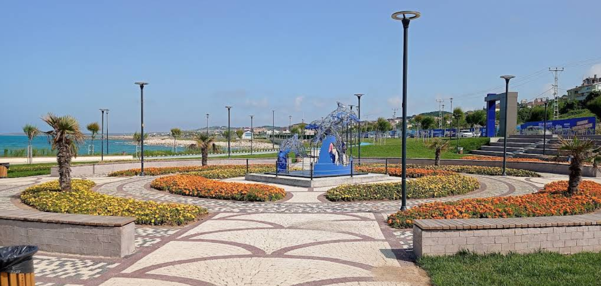
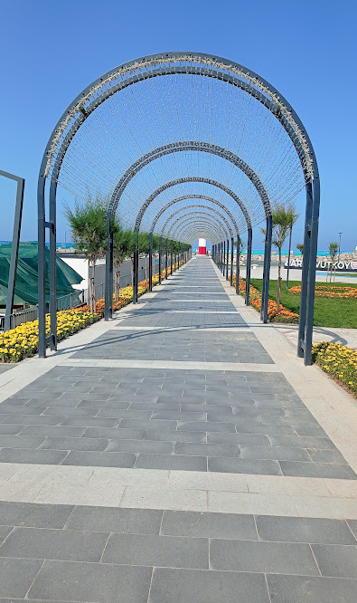
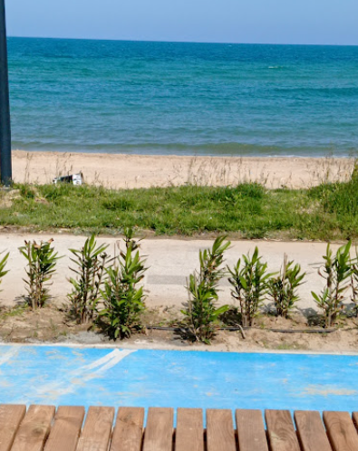
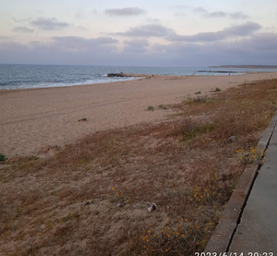
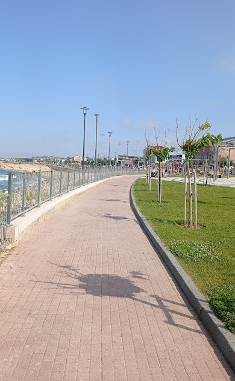
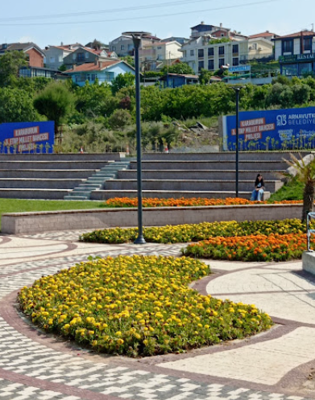

Millet Bahçesi
Geometrik Düzen
Modern peyzajın doğayla buluştuğu, Yeniköy sahilinin en ferah dinlenme noktalarından biri.

Mimari
Işıklı Yolculuk
Modern aydınlatma tasarımları, gece yürüyüşlerini estetik bir deneyime dönüştürüyor.

Kentsel Yaşam
Mavi ve Yeşil
Şehrin kalbinde, denizin huzuru ile parkın canlılığını birleştiren benzersiz bir lokasyon.

Atmosfer
Sakinliğin Rengi
Gün batımında Yeniköy sahilinde huzuru hissetmek için tasarlanmış doğal bir durak.

Rekreasyon
Yürüyüş Patikası
Spor ve sağlıklı yaşam için dizayn edilmiş, denize paralel uzanan kusursuz bir rota.

Peyzaj
Renkli Bahçeler
Her mevsim ayrı bir renk sunan bitki örtüsü ile şehre nefes aldıran estetik dokunuşlar.